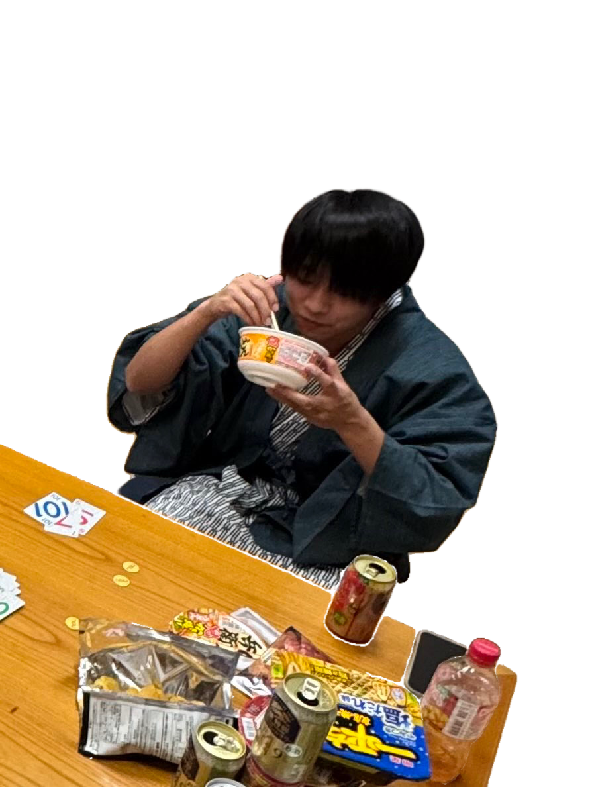

渡辺 悠斗
―― 料理研究家 ――
生年月日：2001年 8月 26日
身長：138cm

渡辺さんは仕事熱心な野心家タイプで、週末はよく仕事をしています。 第一印象は人に厳しく冷たい人間に見られがちですが、実はただの人見知りです。（S.I）

―― 料理研究家 ――
生年月日：2001年 8月 26日
身長：138cm
渡辺さんは仕事熱心な野心家タイプで、週末はよく仕事をしています。 第一印象は人に厳しく冷たい人間に見られがちですが、実はただの人見知りです。（S.I）